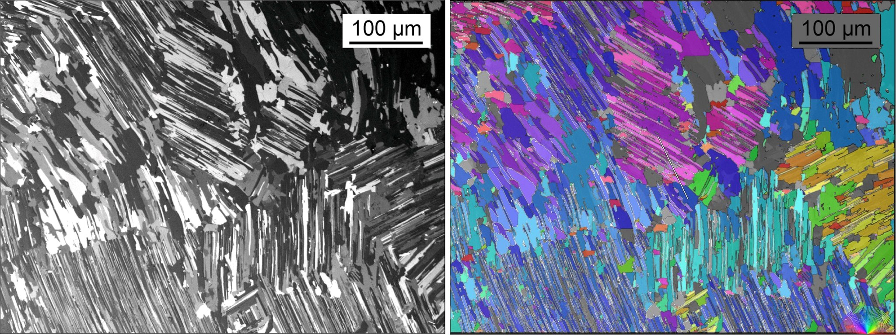
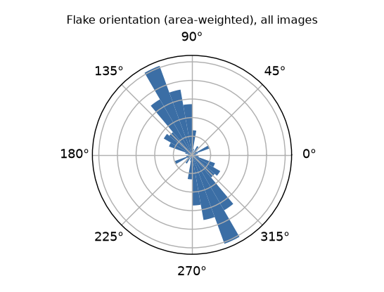
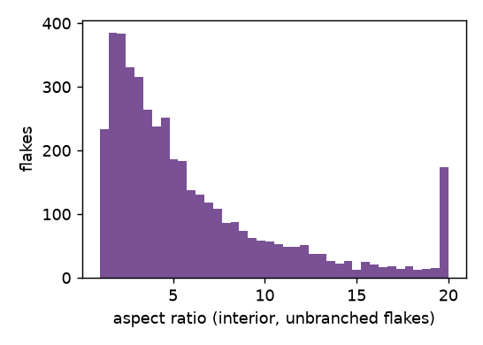

1 images; reading: regions (set by the user); flake width 10.0 px; code version 77a86cd85c.
Confidence
Twin not usable for this image set (it does not resemble the images closely enough, or flakes cannot be found on it at this size): the accuracy below is not evidence about these images, and no search was run on it; the scaled default settings were used. Treat the numbers as unvalidated; check them in the drawings.
Twin accuracy (held-out twin images, exact truth): worst family ratio 2.78, pooled 2.15 (<= 1 means within the tolerances of config.yaml); dev 2.32: a gap shows how much the search fitted the dev twin images.
The twin resembles the real images only roughly (worst profile mismatch x1.17; flake aspect ratio and width as measured by the method differ by up to x1.53); the twin accuracy carries over only as far as that, and only for structures the generator draws (straight laths in colonies).
Rotation check on the real images (central disk turned by 30 deg and measured again): worst ratio 0.25 (passes); S changes by 0.007, the direction by 0.54 deg, the median aspect ratio by 0.3 %; for comparison, the 95 % interval of S from the finite number of flakes is +/-0.063.
Two scales: 68% of the dark phase is in structures about 50 px wide, 5x the typical flake width used here (10.0 px). The settings fit the fine structures; the coarse ones may be split, merged or left out, and the statistics mix the two populations. If the coarse ones are the flakes you mean, rerun with --flake-width 50.
Lengths are in pixels (no --um-per-px given).
Set summary
median
min
max
order parameter S
0.585
0.585
0.585
local S (within colonies)
0.911
0.911
0.911
mean misalignment (deg)
23.1
23.1
23.1
median aspect ratio
4.39
4.39
4.39
median length (px)
38.9
38.9
38.9
median width (px)
7.74
7.74
7.74
flakes used per image
4.34e+03
4.34e+03
4.34e+03
Mean directions differ per image (axial; see the table): a set-level mean direction is only meaningful when the images were taken in the same specimen frame.
Per image
image
mean dir (deg)
S [95 % CI]
local S
misalignment (deg)
AR [95 % CI]
flakes
scratches
L26__rank038__056_TiAl_Lammelar__CC0
116
0.585 [0.52, 0.645]
0.911
23.1
4.39 [4.28, 4.5]
4335
0
How accurate is it (twin images with exact truth)
Twin: 18 code-generated images fitted to this set (realism ok: False; worst profile mismatch x1.17).
twin images
params
mean direction err (deg)
S err
misalignment err (deg)
AR err
flake orientation err (deg)
flakes found
worst family ratio
dev
start
0.3
0.0171
0.967
0.228
1.7
0.61
1.72
holdout
start
0.695
0.0203
1
0.228
1.65
0.619
1.87
dev
chosen
0.155
0.0191
0.968
0.326
1.85
0.552
2.32
holdout
chosen
0.258
0.0181
0.947
0.322
1.8
0.543
2.78
Search: 3 new configurations evaluated (8 incl. cached); objective 2.099 at the start, 2.868 chosen.
Central disk measured as is and turned by 30 deg: direction off by 0.54 deg, S by 0.007, aspect ratio by 0.003 (relative) (worst ratio to tolerance 0.25; <= 1 passes). Necessary, not sufficient.
Drawings (left: original, right: flakes coloured by orientation; grey = not used)

review/L26__rank038__056_TiAl_Lammelar__CC0.jpg

rose.png

aspect_ratio.png
Files
`flakes.csv`: every flake (orientation, length, width, aspect ratio, misalignment, flags)
`image_summaries.csv`: one row per image, with bootstrap intervals